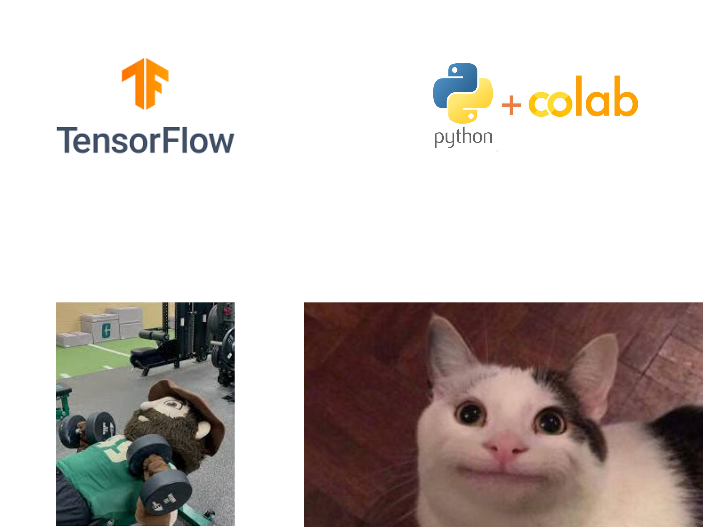
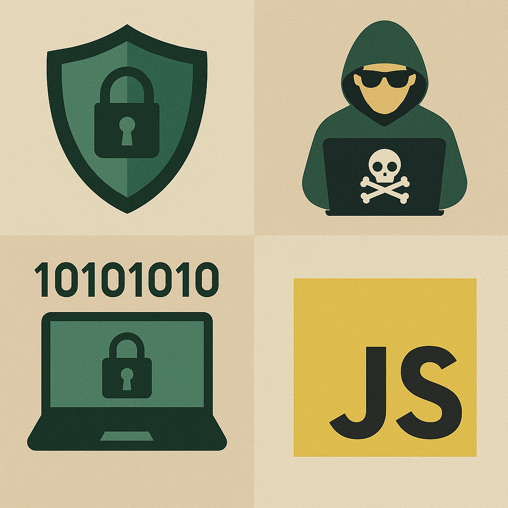
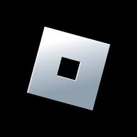
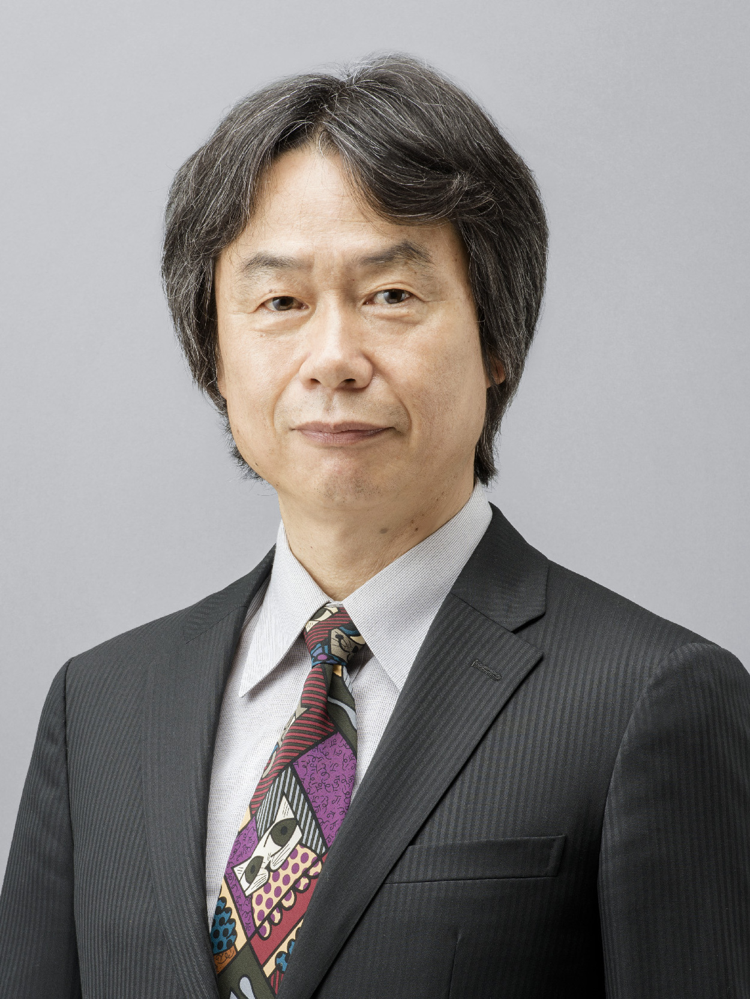
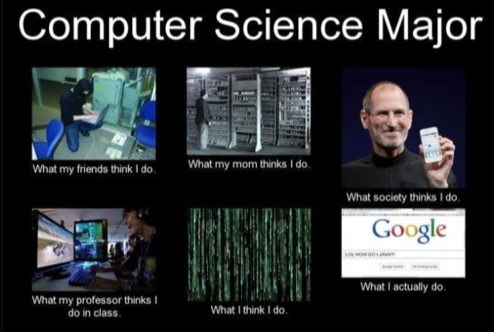

Team Leader
Adam helps keep the team on track by communicating ideas clearly and making sure everyone is on the same page.
Adam's Moodboard:

Backend Developer
Max works on the behind-the-scenes code that makes everything run.
Max's Moodboard:

Developer
Avery primarily works with video game engines that run on C++, but also has experience with C, Java, and Python from university.
Favorite Tools:
Blender
GameMaker
Unreal Engine
Inspirations:


Frontend Developer
Leng likes to work on all things frontend related. He specializes in website design.
Leng's Moodboard:


Scrum Master
Tyler helps manage tasks, keep the team organized, and make sure everything is moving forward smoothly.
Tyler's Moodboard:


I like this meme a lot because I actually love C++. I know it might not be the favorite of many, but something about it really clicks with me and I have a lot of fun coding in it. A lot can be done and learned in C++.